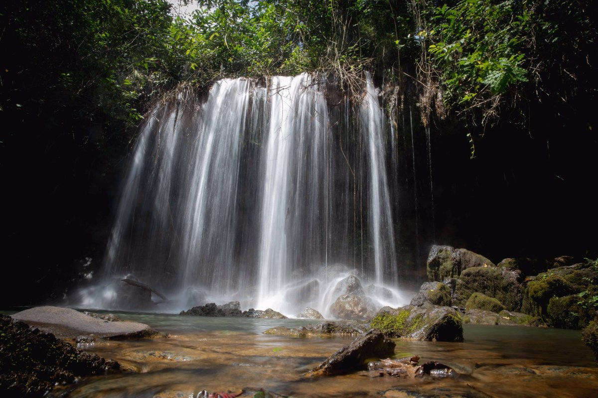
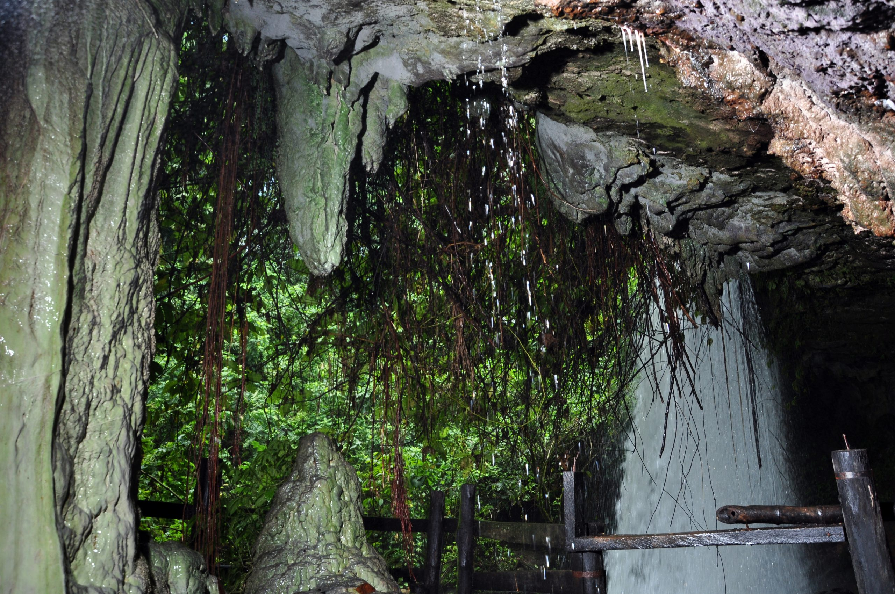
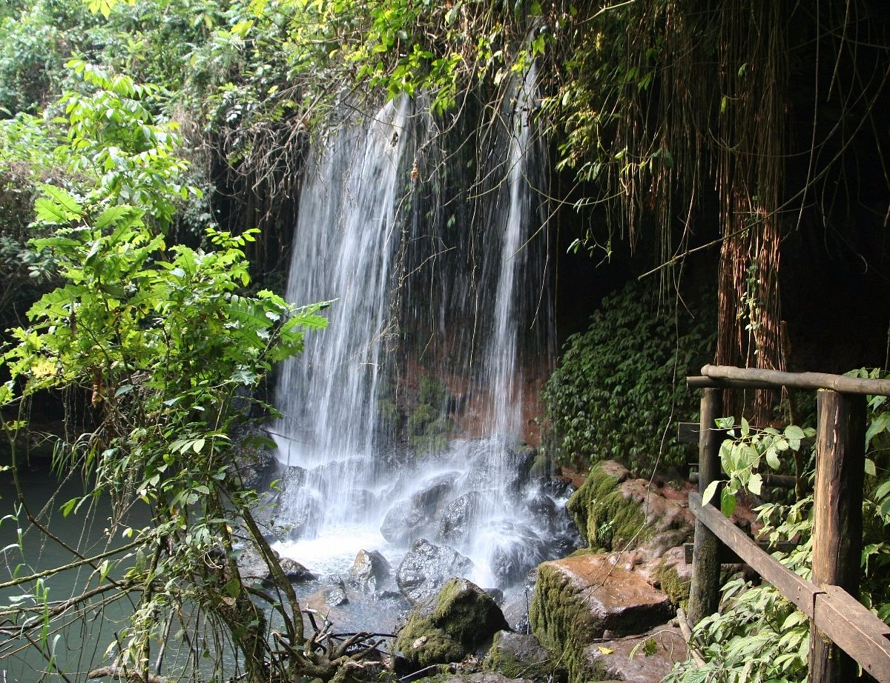
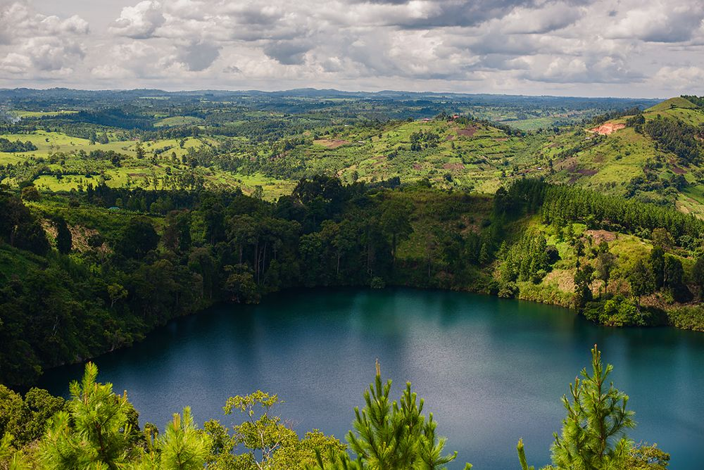
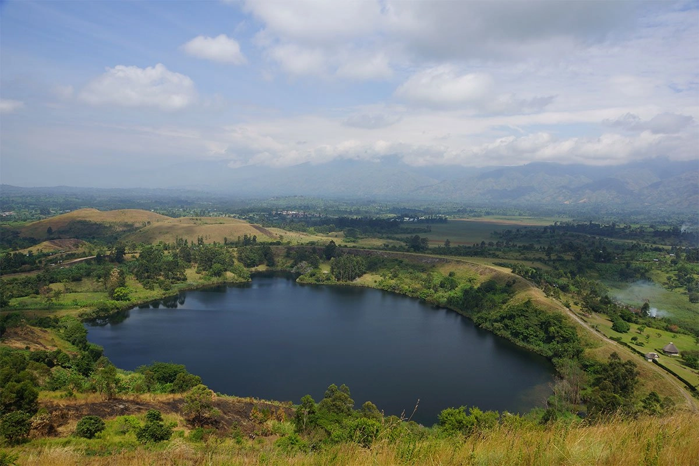
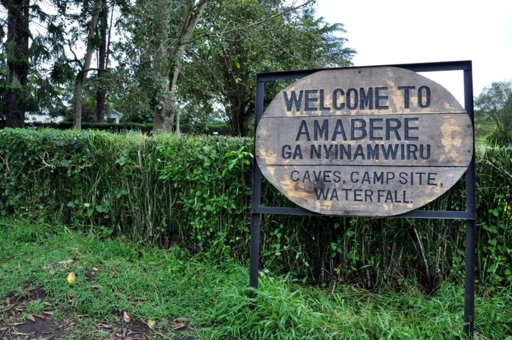

Amabere ga Nyinamwiru — caves, a curtain waterfall, volcanic crater lakes and forest trails, ten kilometres from Fort Portal. Come hear the story the Batooro have told for six centuries.

Long before Fort Portal had a name, King Bukuku of the Batembuzi dynasty ruled this land. His daughter, Nyinamwiru, was said to be so beautiful that suitors would upend his throne. Fearing a prophecy that her son would one day take his crown, Bukuku ordered her breasts removed and had her hidden away in this cave.
"What looked like milk still drips from the stone above — calcium-white, endless, the mountain remembering what she lost."
The plan failed. Nyinamwiru bore a son, Ndahura, who — as foretold — grew up to found the Batembuzi–Bachwezi line of kings. Local guides tell the full tale on-site, standing beneath the very stalactites the legend is named for, geological formations built drop by drop over centuries.
The site sits where limestone caves, a forest waterfall, volcanic crater country and open hill trails all meet within an easy walk of each other.
Walk beneath the overhang where mineral-rich water has built stalactites and stalagmites over hundreds of years — the heart of the Nyinamwiru legend.
A double-strand waterfall drops past the cave mouth into a rock pool below — the coolest, mistiest spot on the trail and the best photo stop on site.
A short hike up the rim brings you to still, deep-blue crater lakes carved by ancient volcanic activity — part of a chain of over three dozen across Toro.
Wind through tea plantations and indigenous forest on marked trails, with views toward the Rwenzori foothills on a clear day. Good birding, too.
Unretouched shots from the trail, the cave mouth and the crater rim above.




Everything you need to know before you set out from Fort Portal.
Last guided walk begins at 5:00 PM. Early morning visits mean fewer people on the trail and better light in the cave.
All entry fees include a guided tour of the Amabere Caves and are VAT inclusive. Student, school group and personalised guide rates are also available.
| Ugandan Citizens (Adults) | UGX 13,900 |
| Tertiary Students (Study Tours Only) | UGX 7,400 |
| Secondary Schools | UGX 4,300 |
| Primary Schools | UGX 3,200 |
| International Schools | UGX 8,900 |
| Rest of Africa | UGX 21,900 |
| Indian Nationals | UGX 21,900 |
| Foreign Residents | UGX 38,700 |
| Foreign Students | UGX 27,800 |
| Non-Citizens | UGX 50,400 |
| Personalised Guide | UGX 39,800 |
* VAT inclusive. Visitors may be asked to provide identification.
Reachable by private car, boda boda or shared taxi in about 20 minutes. Roughly 5 hours by road from Kampala. Signposted from the main road.
About 45 minutes for the caves and waterfall loop, plus 1–2 hours if you add the crater lake viewpoint hike.
Overnight camping is available on-site for those combining Amabere with Kibale Forest or the Rwenzori foothills the next day.
The Toro Kingdom palace, local markets and your likely base for the night.
Uganda's primate capital — chimpanzee trekking through dense rainforest.
The "Mountains of the Moon," a UNESCO site with multi-day trekking routes.
One of the most striking of Toro's 36+ volcanic crater lakes, ringed by forest.
Nyakasura, on the Fort Portal–Bundibugyo road, Kabarole District, Western Uganda.
The guide's telling of the legend made the caves — I stood right under the drip he was describing.
We only planned an hour and stayed three. The crater lake hike above the falls was the real surprise.
A perfect half-day stop between Kibale and Fort Portal town. Bring shoes with grip — it's slippery near the falls.
No — a local guide is included in your entry fee and is assigned on arrival. For groups larger than 10, or for a specific language guide, we recommend booking a day ahead using the form below.
The cave and waterfall loop is short and manageable for most fitness levels, though the path can be slippery. The crater lake hike is steeper and better suited to visitors comfortable walking uphill for 45–60 minutes.
Yes, wading and swimming are permitted in the pool beneath the falls. The water is cold year-round — bring a towel and a change of clothes.
Yes. A campsite sits above the falls with space for tents; ask about hiring gear if you're travelling without your own. It's a convenient overnight stop between Kibale Forest and the Rwenzori foothills.
The site is open year-round and the waterfall runs strongest in the wetter months (March–May and September–November). The dry months (June–August, December–February) make the trail and crater rim path less slippery.